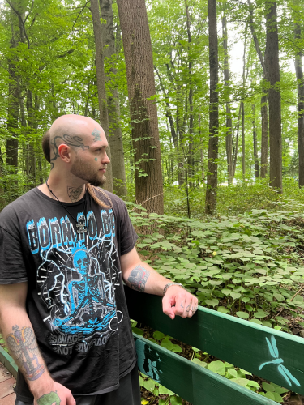

My name is Saint Nicky JK — Astrologer, Tarot Reader and founder of Deadline Astrology. I offer live, chat-based Astrology and Tarot readings where you can connect with me in real time.
Additionally I offer In-depth Birth Chart Destiny Readings — If you are interested in Knowing Your Destiny and/or Personality strengths & weaknesses. Get started by clicking below.